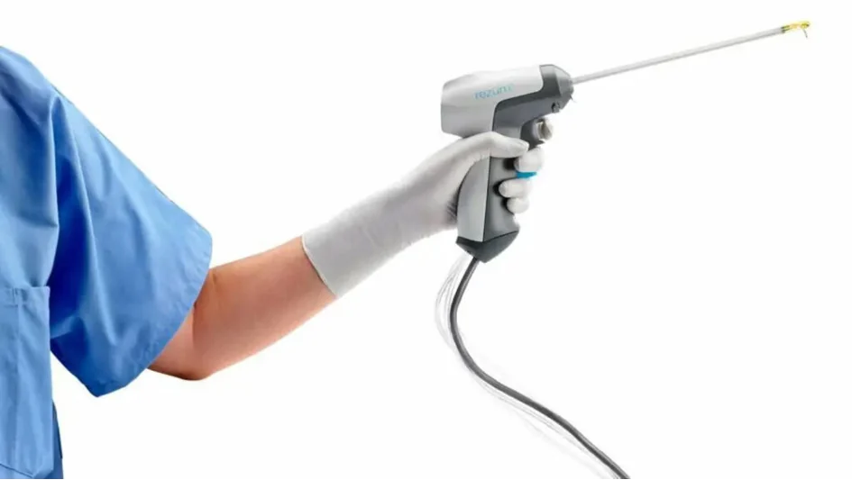
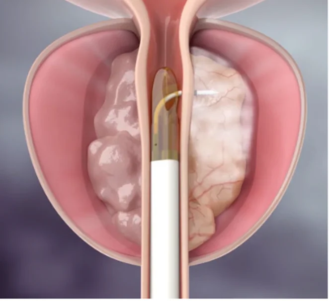

İyi Huylu Prostat Büyümesi (BPH) Nedir?
İyi huylu prostat büyümesi, 40 yaşından sonra ve özellikle de 60 lı yaşlarda prostat bezinin büyümesi ve idrar yolu üzerindeki tıkayıcı etkisinin artması neticesinde ortaya çıkan bir sağlık sorunudur. Prostat bezindeki büyüme idrar akışını engelleyebilir ve idrar yapma ile ilgili semptomlara yol açabilir. Prostat büyümesinin belirtileri şu şekilde olabilir;
- Sık sık idrara çıkma ihtiyacı
- Geceleri idrara kalkma
- İdrar yaparken zorlanma, yanma hissiyatı
- İdrar sonrasında mesanede idrar kalma ve tam boşalmama hissi
Prostat büyümesinde uygulanan tedaviler
Hastanemiz üroloji kliniğinde prostat büyümesine yönelik güncel teknolojik gelişmeleri takip ederek tüm ameliyatları ve tedavi yöntemlerini uygulamaktayız.
Kliniğimizde prostat büyümesi için sunduğumuz tedavi seçenekleri;
- İlaç kullanımı ile yapılan medikal tedaviler
- Klasik TUR ameliyatı
- Lazer enükleasyon ameliyatları (Holep-BiPolep)
- REZUM-Su buharı tedavisi
Rezum (Su Buharı) Tedavisi Nedir?
Rezum tedavisi, prostat büyümesinin tedavisinde kullanılan teknolojinin bize sunduğu minimal invaziv bir tedavi yöntemdir. Bu tedavi yönteminde, prostat bezinin boyutlarını küçültmek ve idrar akış miktarını, hızını artırmak için su buharının enerjisi kullanılır. . Rezum tedavisi, prostat büyümesinin semptomlarını gidermek, işeme fonksiyonlarını normalleştirmek ve bunu yaparken de hastaya hiçbir yan etki oluşturmamak için uygulanır.
Neden Rezum Tedavisi Olmalıyım?
Rezum tedavisinin öne çıkan birçok avantajı vardır:
- Minimal İnvaziv bir yöntem: Yani hastanın vücuduna cerrahi olarak büyük bir yara, girişim vb. bir işlem yapılmaz. İşlem süresi kısadır. Genellikle ayakta tedavi olarak gerçekleştirilir ve hasta aynı gün taburcu edilir.
- Hızlı İyileşme: Hastalar prostat büyüklüğüne göre birkaç gün içinde normal aktivitelerine dönebilirler.
- Yan Etkiler Azdır: İDRAR KAÇIRMA, kanama, anesteziye bağlı riskler, cinsel işlev bozukluğu, sertleşme sorunu, MENİDE GERİ KAÇMA gibi yan etkiler görülmez. Hastaların cinsel fonksiyonları ameliyat öncesi durumla aynı kalarak devam eder.
- Etkinlik: Rezum tedavisi semptomları hızlı bir şekilde hafifletir. Yaklaşık 1 ay sonunda hastaların prostat boyutları yıllar öncesi boyutlarına döner ve uzun süreli rahatlama sağlar.
Rezum tedavisinde görülebilecek yan etkiler
Her tedavi ve girişimde olduğu gibi, Rezum tedavisinin de bazı riskleri ve yan etkileri olabilir:
- Geçici Yan Etkiler: Uygulama sonrasında sonrasında geçici olarak idrar yolu enfeksiyonu, sonda çıkarıldığında idrar yolunda yanma, kanama veya idrar yapmada zorluk görülebilir.
Rezum Tedavisi Nasıl Uygulanır?

Rezum uygulamasını lokal anestezi, bel altını uyuşturma, sedatif analjezi uygulamaları eşiliğinde gerçekleştiriyoruz. İşlem, idrar kanalından (üretradan) tek kullanımlık yüksek teknoloji ürünü ince bir kateter yardımıyla yapılmaktadır. Bu sistem ile prostat dokusuna kontrollü bir şekilde yüksek sıcaklıkta su buharı verilir. Su buharı, prostat hücrelerinde yıkım oluşturarak dokunun küçülmesini sağlar. İşlem 10-15 dakika sürer ve hasta aynı gün evine dönebilir.
Rezum aşamalarından bahsedecek olursak;
- Hastaya uygun anestezi ya da analjezi uygulanarak tedavi bölgesi uyuşturulur.
- İdrar kanalından Rezum uygulama kateteri dikkatlice yerleştirilir.
- Kateter aracılığıyla prostat dokusuna uygun ve gerekli bölgelere su buharı verilir.
- Su buharı, prostat hücrelerinin zarlarını parçalayarak hücrelerin ölümüne yol açar.
Prostat Dokusunun Küçülmesi:
- Ölü hücreler zamanla vücut tarafından emilir ve prostat dokusu küçülür.
- Bu süreç, idrar yolundaki baskının azalmasını ve idrar akışının düzelmesini sağlar.
Tedavi Sonrası İyileşme Süreci

Rezum tedavisinin ardından iyileşme süreci oldukça zahmetsiz ve hızlı olur. Hastalar birkaç gün içinde normal aktivitelerine dönebilirler. Ancak, tam iyileşme ve semptomların tamamen düzelmesi 2-4 hafta sürebilir. Bu süre zarfında destekleyici medikal teaviler uygulanmalı ve ağır fiziksel aktivitelerden kaçınılmalıdır.